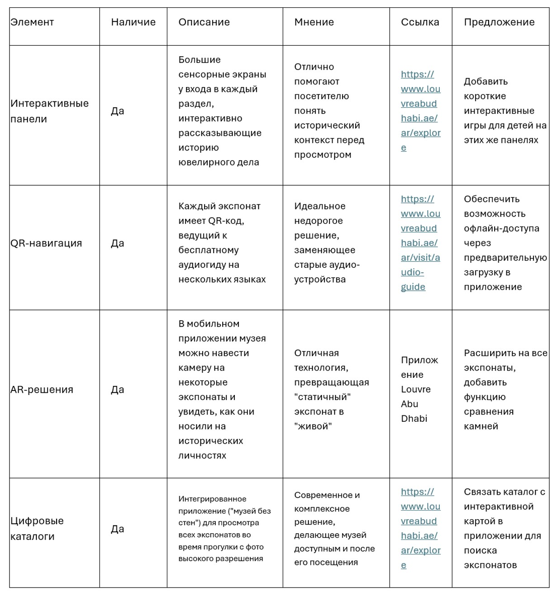
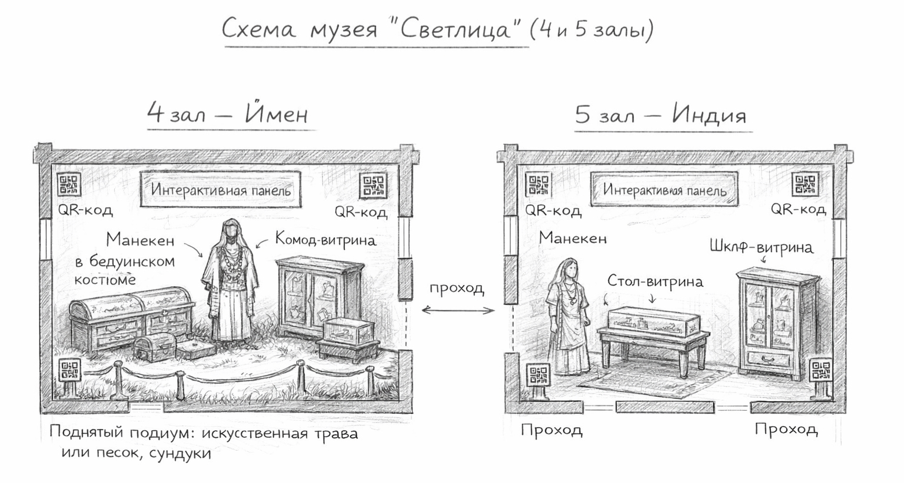
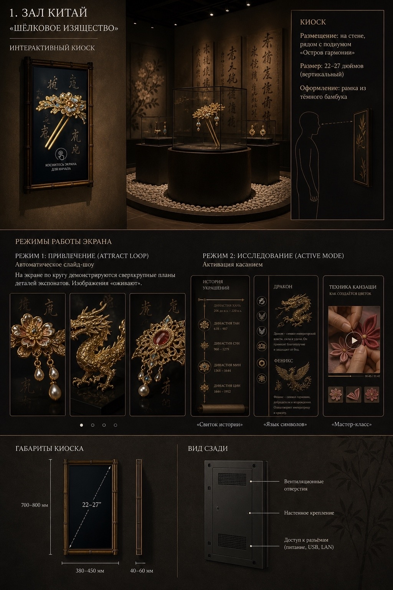

Журнал прогресса
Завершён анализ аналогов и мировых музеев
Изучены планировочные решения, климатические системы и типы витрин музеев Фаберже, Эрмитажа, V&A London, Лувра Абу-Даби и Van Cleef & Arpels. Сделаны выводы: лучшие практики – комбинация низких горизонтальных витрин (Van Cleef) с автономным климат-контролем и антибликовым стеклом. Также проведён детальный разбор Гохрана и музея «Самоцветы». Составлена сравнительная таблица мультимедийных технологий.

Выбрана концепция «Кабинет исследователя-путешественника»
Утверждена экспозиция из 9 залов: Китай, Йемен, Индия, Иранское нагорье, Африка+Венеция, Болгария, Мастерская, Офис и Хранилище. Разработан план расстановки мебели (старинные комоды, стол-верстак, шкафы). Предложены 3D-копии украшений для тактильного взаимодействия. Начата работа над макетами витрин с учётом ограничений ОКН (нет крепления к стенам).

Прототипы мультимедиа и инженерные расчёты
Разработаны сценарии для сенсорных экранов в каждом зале: интерактивная карта Шёлкового пути, «Симфония деталей» в индийском зале, «Азбука орнамента» в болгарском. Подобрано оборудование: планшеты Infinix XPAD 20 (~12 500 руб) для информационных киосков, капсульная кофеварка Tuvio TCM04EA (10 000 руб), система направленного звука. Оформлены требования пожарной безопасности (ширина проходов не менее 1,2 м, 2 эвакуационных выхода при 50+ посетителях).
